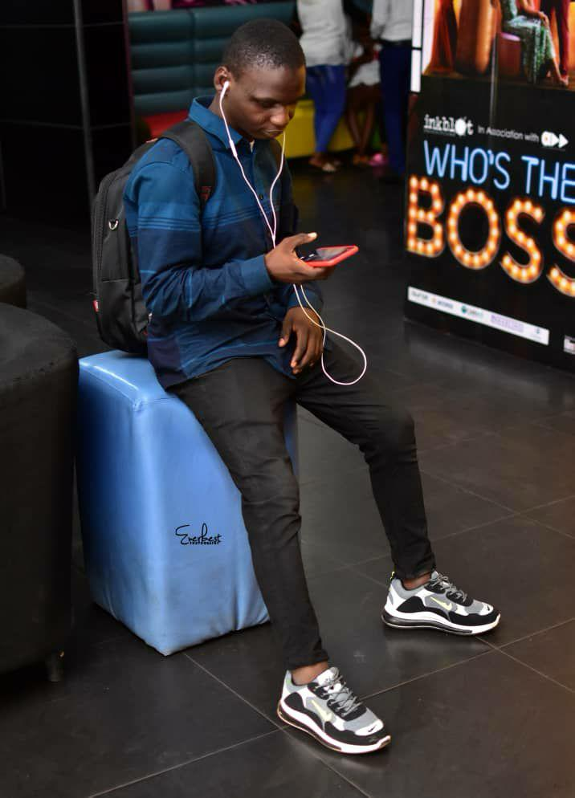

Education
- University of Ilorin / Bsc. Statistics
SEPTEMBER 2015 - OCTOBER 2019
- Kwara State / Msc. Computer Science
JAN 2021 - DEC 2023
- Udemy / Web Development Bootcamp
Experience
- IBEDC Ibadan / Meter Mapper
- LMFX Ilorin / Forex Trader
Skills
UX Design, UI Design, Advance Interaction Design, Figma, Adobe XD, Illustrator, Photoshop, HTML, CSS, JavaScript, TypeScript, React, React.js, MongoDB, .NET core, React Native, Next.js, C#, GraphQL, Node.js, ReactJS, Node JS, NextJS, WordPress, R, Excel, Writing Skills, Reporting, Communications, Microsoft Office, Teamwork, Design Research, Pliability, Leadership, Unit Testing, Testing, SQL
Experience
- Performed design automation, resulting in a 30% increase in design productivity
- Established and maintained efficient communication channels with the dev team, leading to a 20% reduction in design- related development issues
Others